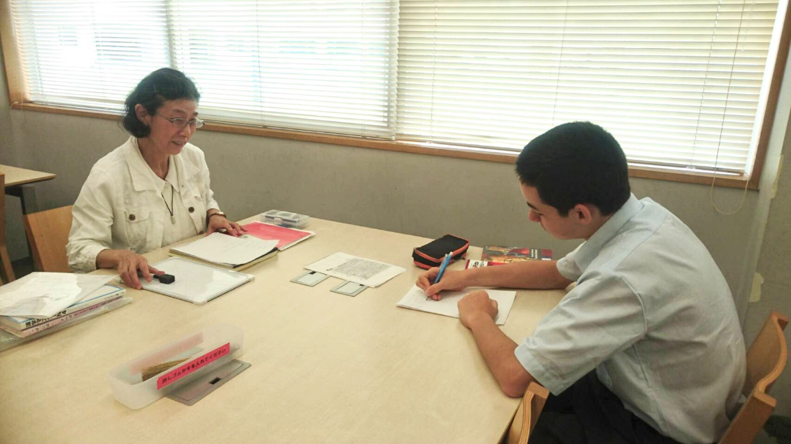
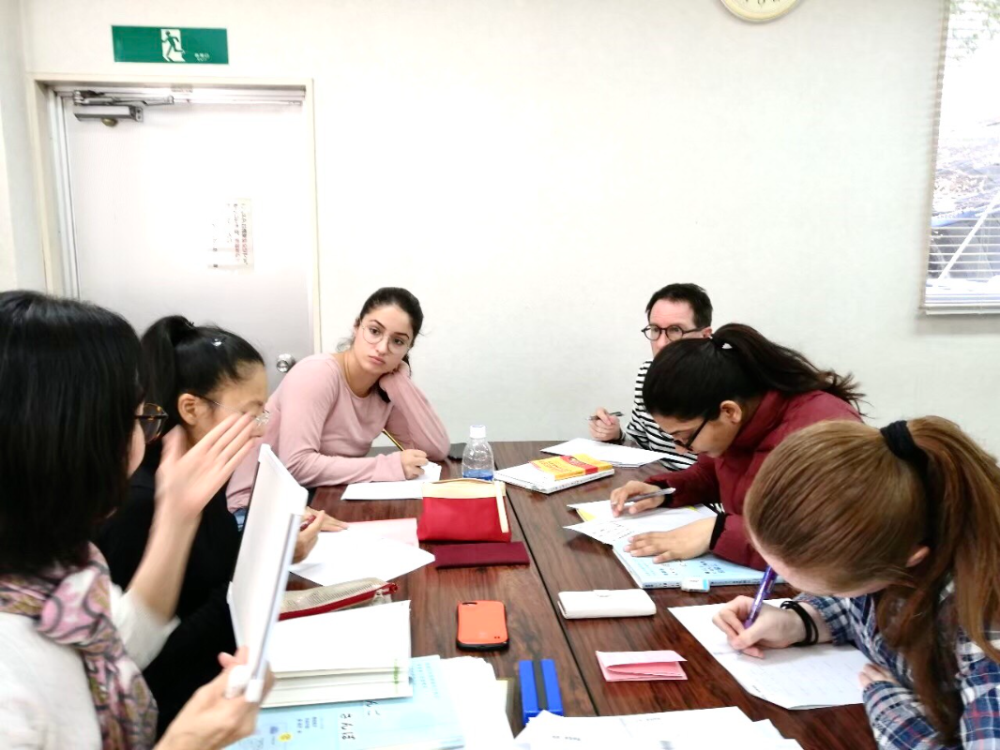

ベトナム難民へのボランティア日本語授業開始（～1995）
鎌倉市内大手企業にて外国人社員への日本語授業担当（～2000）
ブラジルからの就労者へのボランティア授業開始
「やさしい日本語講座（全10回）」主催
鎌倉市主催「日本語講座（全20回）」の講師担当
日本語教授活動に対する、「エイボングループサポート賞」受賞
鎌倉市主催「日本語講座（全20回）」の講師担当
鎌倉市国際交流フェスティバル参加
「第1回 外国人による日本語スピーチコンテスト」主催（深沢公民館、9カ国、11名参加）
鎌倉高校、大船高校在籍留学生の日本語授業担当
鎌倉市主催「日本語講座（全20回）」の講師担当
鎌倉市国際交流フェスティバル参加
「第2回 外国人による日本語スピーチコンテスト」主催（深沢公民館、7カ国、10名参加）
「日本語講座（全10回）」主催
第一小学校在籍外国人児童への日本語指導員派遣
聖テレジア病院、英国人研修生へのボランティア授業開始（～2002）
「第3回 外国人による日本語スピーチコンテスト」主催：後援 鎌倉市（中央公民館、11カ国、14名参加）
腰越小学校在籍外国人児童への日本語指導員派遣（全10回）
外国人のための日本の家庭料理教室開催（全2回、35名参加）
英国大使館日本語研修所にて外交官及びその家族への日本語授業担当（～2006年）
七里ガ浜小学校在籍外国人児童への日本語指導員派遣
鎌倉高校在籍留学生の日本語授業担当（～2004）
七里ガ浜高校在籍留学生の日本語授業担当（～2016年）
鎌倉市ＮＰＯセンターにてボランティア授業開始（～2018年）
逗子開成中学高等学校在籍留学生の日本語授業担当（～2018年）
有料クラス
場所： 講師宅又は出張（鎌倉市及び近隣市） 日時：平日、時間は応相談。 料金： 90分につき2,000円（講師宅）、90分につき3,000円＋交通費（出張授業） *現在は新型コロナ感染症対策のため、オンラインのみで授業を行っております。 無料クラス
場所： 鎌倉NPOセンター（神奈川県鎌倉市御成町18-10。鎌倉駅より徒歩3分。） 日時：月曜日9:00 – 10:30（初級2＋中級1）、10:30 – 12:00（初級1＋中級2） 料金：無料 *現在は新型コロナ感染症対策のため、オンラインのみで授業を行っております。 入門
初級
初中級
中級